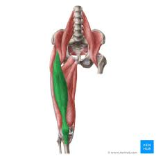
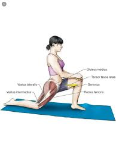

Hip Flexor Stretch
There are many hip flexors withing the mody, the main one targeted by this stretch is the "rectus femoris." It spans the front of the hip down to the bottom of the femur, around where the knee is. This is commonly sore after intense, high effort runs, mid distance races, or hard lifting. The rectus femoris plays a key role in lifting your leg up and providing the knee drive needed to run fast.
To stretch this muscle you will begin on your knees. The body from the knees up should be perpendicular to the ground and your lower legs should be laying on the ground, like an L shape. Simply lift on leg up so the lower leg is now parallel with your body and the quadriceps are parallel with the ground. Now that you are in position roll your hips forward and up as if you were trying to roll them into your face. You should feel a strong stretch in the front of the quadricep, although remember that you are not actually stretching the quadricep directly, you are stretching the rectus femoris. Keep your hips rolled for about 15 seconds, then switch legs and repeat.
 Back to Home Page